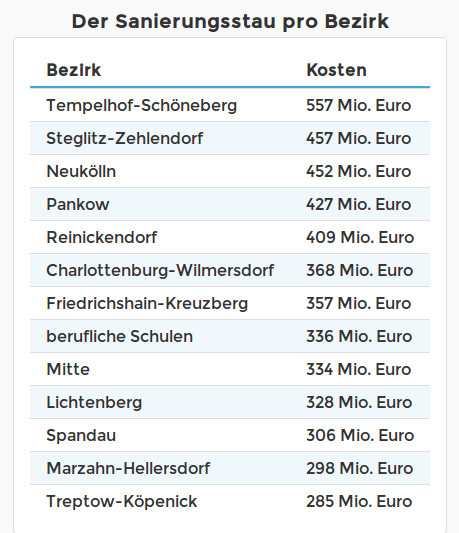
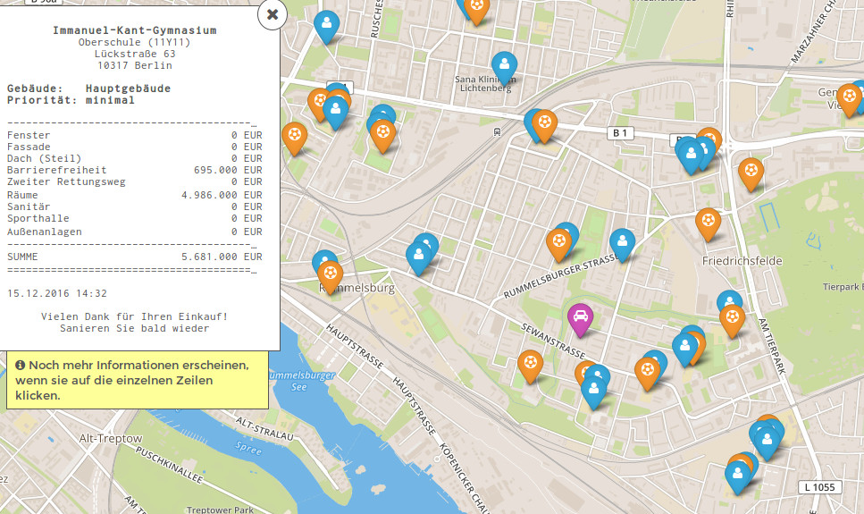

{% extends "_case-studies.html" %}
{% set case_id = 15 %}
{% block challenge %}
 Der Zustand Berliner Schulgebäude ist seit längerem massiver Kritik durch Schüler und Eltern ausgesetzt. Der Putz
bröckelt, Schulhöfe sind verwahrlost und Sporthallen dringend renovierungsbedürftig. Durch die stetig steigende
Schülerzahl in Berlin wird die Situation in den Schulen weiter verschärft; ein Trend der anhält. Auch die
Printmedien berichten in regelmäßigen Abständen über die schlechten baulichen Zustände einzelner Berliner Schulen,
die eine enorme Belastung für Schüler und Lehrer darstellen. Die Politik hat darauf reagiert und die Investitionen
erhöht. Dennoch scheint nach wie vor unklar, wie viel Geld zur Renovierung der Berliner Schulen benötigt wird. Im
Jahr 2016 erschien bereits der dritte Bericht, der angefordert wurde, um diese Frage zu klären. Die vorläufigen
Zahlen sprechen von rund 4,9 Milliarden Euro für ganz Berlin. In welchen Schulen dieses Geld wofür genau benötigt
wird, schlüsseln die Verantwortlichen allerdings nur bis zur Bezirksebene auf.
Der Zustand Berliner Schulgebäude ist seit längerem massiver Kritik durch Schüler und Eltern ausgesetzt. Der Putz
bröckelt, Schulhöfe sind verwahrlost und Sporthallen dringend renovierungsbedürftig. Durch die stetig steigende
Schülerzahl in Berlin wird die Situation in den Schulen weiter verschärft; ein Trend der anhält. Auch die
Printmedien berichten in regelmäßigen Abständen über die schlechten baulichen Zustände einzelner Berliner Schulen,
die eine enorme Belastung für Schüler und Lehrer darstellen. Die Politik hat darauf reagiert und die Investitionen
erhöht. Dennoch scheint nach wie vor unklar, wie viel Geld zur Renovierung der Berliner Schulen benötigt wird. Im
Jahr 2016 erschien bereits der dritte Bericht, der angefordert wurde, um diese Frage zu klären. Die vorläufigen
Zahlen sprechen von rund 4,9 Milliarden Euro für ganz Berlin. In welchen Schulen dieses Geld wofür genau benötigt
wird, schlüsseln die Verantwortlichen allerdings nur bis zur Bezirksebene auf.
{% endblock %}
{% block solution %}
Als Reaktion darauf hat sich als Eltern-Initiative ein Projekt entwickelt, das die Zahlen für jede einzelne Schule
übersichtlich und transparent auf einer Internetseite aufschlüsselt. Mit einer interaktiven Karte, wird der
Renovierungsbedarf in unterschiedlichen Kategorien für jede einzelne Schule detailliert aufgelistet: beispielsweise
für Fenster, Fassade, Barrierefreiheit oder Sporthalle. Für jedes Schulgebäude wird auf diese Weise der aktuelle
Sanierungsbedarf als Pop-up-Fenster angezeigt. Wählt man ein Gebäude aus, wird der Renovierungsbedarf wie auf einem
Kassenbon detailliert mit Einzelsummen aufgelistet. Um die Zahlen im richtigen Zusammenhang zu verstehen und wie
sich die Einzelbeträge genau zusammen setzen, gibt es einen erläuternden Text zusätzlich zur Karte. Außerdem führt
die Homepage Listen, welche Bezirke, Schulgebäude, Turnhallen, Außenanlangen etc. die teuersten sind.
{% endblock %}
{% block datasets %}

Bisher werden die Daten zum Sanierungsstand unter Verschluss gehalten. Nur die Zahlen aus Lichtenberg wurden bereits
bei einer Pressekonferenz präsentiert und heraus gegeben, sodass diese verwendet werden konnten. Zur Verortung der
Schulgebäude wurde auf bereits vorhandene, offene Datensätze aus Berlin zurück gegriffen. Mit mehr verfügbaren
Daten, soll das Projekt über den Bezirk Lichtenberg hinaus auf ganz Berlin ausgeweitet werden.
{% endblock %}
{% block benefitters %}
In erster Linie profitieren die Kinder, wenn ihre Schule saniert und damit ihre Lernumgebung verbessert wird.
Dadurch, dass nun erstmals berlinweit bzw. aktuell lichtenbergweit erkennbar ist, wo überall das Geld bei den
Schulen gebraucht wird, wird es für Eltern und Schulleiter einfacher, Investitionen gegenüber Bezirken und dem Land
einzufordern. Der Schulsanierungsbedarf ist keine abstrakte Milliarden-Zahl mehr, sondern es ist einfach erkennbar,
wo und wieviel Geld für welche Dinge dringend benötigt wird.
{% endblock %}
{% block outcome %}
Petras Söhne gehen beide in Berlin-Lichtenberg zur Schule. Von den Erzählungen ihrer Kinder und ihren eigenen
Besuchen weiß sie, in was für einem schlechten Zustand Klassenräume, Sanitäranlagen und der Schulhof sind. Zum
Schuljahresbeginn haben die Eltern darum schon gemeinsam den Klassenraum renoviert, aber vom Berg des
Sanierungsbedarfs war das nur ein winziger Teil.
Die Stimmung bei Schülern und Eltern ist dementsprechend schlecht,
insbesondere da sich die Situation in den vergangenen Jahren nur unzureichend verbessert hat. Als Elternbeirat
engagiert sich Petra darum für umfangreiche Sanierungsmaßnahmen an der Schule. Gegenüber dem Bezirk und dem Land
sind die Forderungen nicht immer leicht zu verteidigen. Der Renovierungsbedarf in Berlin ist so groß, dass Petra und
die anderen Eltern oft mit der überwältigenden Zahl von 4,9 Milliarden Euro Berliner Gesamtbedarf abgespeißt werden.

Diese Summe bleibt aber vollkommen intransparent und so weiß niemand, wo dieses Geld in Berlin benötigt wird und wie
hoch der eigene Renovierungsbedarf konkret im Vergleich zu anderen Berliner Schulen ist. Um diese Fragen besser
beantworten zu können, um ein besseres Bild von dem gesamten Renovierungsbedarf an den einzelnen Berliner Schulen zu
bekommen und die eigene Verhandlungsposition zu stärken, hat ein Technik-affiner Elternbeirat der Parallelklasse
eine Internetseite erstellt. Unter www.schulsanierung.tursics.de
haben sie begonnen die Zahlen für Schulen in Lichtenberg zusammenzutragen und übersichtlich aufzubereiten.
Auf einer Karte kann man jetzt über Lichtenberg
scrollen und sehen, wie renovierungsbedürftig die einzelnen Schulen sind. Aufgeschlüsselt in die einzelnen
Bedarfsfelder wie Sanitäreanlagen, Sporthalle, Fenster oder Barrierefreiheit, kann Petra – und jeder andere
Interessierte – einen guten Eindruck von dem Renovierungsbedarf der einzelnen Schulen gewinnen. Grafiken geben
außerdem einen Überblick, welche die teuersten Bezirke, Schulen, Turnhallen etc. sind. So wird deutlich, das von den
328 Millionen Euro die für Lichtenberg benötigt werden, knapp ein Drittel (117 Millionen Euro) zur Renovierung der
Klassenräume und rund ein Viertel der Kosten (79 Millionen Euro) für Sporthallen anfällt.
Der Investitionsstau ist
überwältigend und erstmals aufgeschlüsselt sichtbar für den gesamten Bezirk. Obwohl Petra der Renovierungsbedarf in
Lichtenberg bewusst war, ist sie trotzdem geschockt von dem Ausmaß, jetzt wo klar ersichtlich ist, wo das Geld
überall fehlt. An vielen Schulen in Lichtenberg liegt der Renovierungsbedarf im oberen Millionenbereich, bei einer
Schule sogar im zweistelligen Millionenbereich. Und das, obwohl Lichtenberg eher zu den Bezirken mit geringerem
Sanierungsbedarf gehört.
Diese Erkenntnisse bestärken Petra und den Elternbeirat weiter zu kämpfen für größere
Investitionen in die Infrastruktur der Berliner Schulen. Und sie ist überzeugt, dass eine solche Übersicht für
gesamt Berlin, auch der Verwaltung helfen wird, den Renovierungsbedarf besser zu lokalisieren und abzubauen.
{% endblock %}
{% block sources %}
http://schulsanierung.tursics.de/
https://raw.githubusercontent.com/tursics/schulsanierung/master/assets/social.gif
{% endblock %}